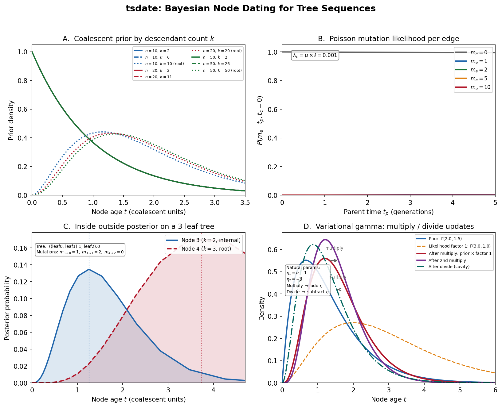

Overview of tsdate
Before assembling the watch, lay out every part and understand what it does.
{kind=link}

tsdate at a glance. Panel A: Coalescent prior – conditional coalescent moments for different sample sizes, with gamma priors on node age shaped by descendant count. Panel B: Edge likelihood – Poisson mutation likelihood as a function of parent time for edges with varying mutation counts. Panel C: Inside-outside posterior distributions over a time grid for nodes with different roles in a small tree. Panel D: Variational gamma – the multiply/divide operations on gamma distributions showing prior-to-posterior evolution.
If tsinfer reconstructs the hidden topology of the ancestral recombination graph – the arrangement of gears and springs inside the case – then tsdate adds calibration marks to the movement, converting a bare mechanism into a working timepiece. Where tsinfer answers “who is related to whom?”, tsdate answers “when?”
This chapter lays out all the parts before we begin assembly. By the end you will know what tsdate computes, why it frames the problem as Bayesian inference, and how its three dating methods relate to one another. Subsequent chapters build each gear from scratch.
What Does tsdate Do?
Given a tree sequence \(\mathcal{T}\) with known topology but unknown node ages, and observed mutational data \(\mathbf{D}\), tsdate computes posterior estimates for the age of every ancestral node.
The output is a dated tree sequence where every node has a calibrated age (in generations or years), and mutations are placed at the midpoint of their parent edge.
From these dated genealogies, you can extract:
Pairwise coalescence times between any two samples at any position
Allele ages – when each mutation arose
Effective population size through time
Selection signatures from distorted branch length distributions
Prerequisite: tsinfer provides the topology
tsdate does not infer the tree structure. It expects a tree sequence whose topology has already been reconstructed – typically by tsinfer (see Overview of tsinfer for how that works). Think of it this way: tsinfer assembles the gear train, and tsdate etches the hour markers onto the dial. If the topology is wrong, the calibration marks will be wrong too, so a high-quality tsinfer run is the prerequisite for accurate dating.
The Bayesian Framework
tsdate formulates node dating as a Bayesian inference problem. Let’s build this up piece by piece.
The unknowns
We have a tree sequence with \(N\) non-leaf nodes. Each node \(u\) has an unknown age \(t_u \geq 0\). The vector of all unknown ages is:
The constraint is that every parent must be older than every child: if edge \(e = (u, v)\) connects parent \(u\) to child \(v\), then \(t_u > t_v\).
The data
On each edge \(e\) of the tree sequence, we observe \(m_e\) mutations. An edge spans a genomic interval of length \(\ell_e\) base pairs. Under the molecular clock, the expected number of mutations on edge \(e\) is:
where \(\mu\) is the per-base-pair, per-generation mutation rate.
The posterior
Bayes’ rule gives us:
In watch terms, we are combining two sources of information to set the hands:
The likelihood is evidence from the mutation clock – the ticking of the molecular metronome on each branch. It decomposes over edges: each edge contributes independently via a Poisson model (Gear 2: The Mutation Likelihood).
The prior is the expected beat rate from coalescent theory – what population genetics tells us about how old a node should be before we look at any mutations. It decomposes over nodes: each node’s age has a prior derived from the coalescent, conditioned on how many samples descend from it (Gear 1: The Coalescent Prior).
Probability Aside – What “posterior” means here
If you have not encountered Bayesian inference before, the core idea is simple. We start with a prior belief about a quantity (here, how old each node is, based on coalescent theory). Then we observe data (mutation counts) and update our belief using Bayes’ rule. The result – the posterior – balances prior knowledge with the evidence. When the data are strong (many mutations on an edge), the posterior is driven by the likelihood; when data are sparse (few or zero mutations), the posterior leans on the prior.
The challenge is computing the posterior. The node ages are coupled: the age of a parent constrains the ages of its children, and vice versa. This creates a complex, high-dimensional posterior that cannot be computed in closed form.
tsdate uses message-passing algorithms to approximate this posterior. Imagine messages flowing through the gear train: each gear (node) sends information to its neighbors about what time it thinks it is, and receives information back. After enough rounds of message exchange, every gear settles into a self-consistent position.
Inside-Outside (Inside-Outside Belief Propagation): Discretize time into a grid, represent each node’s marginal posterior as a probability vector, propagate messages up and down the tree.
Variational Gamma (Variational Gamma (Expectation Propagation)): Approximate each node’s marginal posterior as a gamma distribution, refine via expectation propagation (moment matching).
Both methods are linear in the number of edges, making them scalable to tree sequences with millions of nodes.
Probability Aside – What is belief propagation?
Belief propagation (BP) is an algorithm for computing marginal distributions in a graphical model. The idea: each variable “asks” its neighbors what they believe, incorporates the answers, and “tells” its neighbors its updated belief. On a tree-shaped graph, two passes (one up, one down) suffice for exact answers. On a graph with loops – like a tree sequence, where nodes are shared across local trees – BP becomes loopy BP, an approximation that works well in practice. The inside-outside and variational gamma methods are both forms of BP adapted to the tree sequence factor graph.
A Graphical Model Perspective
It helps to think of the tree sequence as a factor graph. This is a bivariate graphical model with two types of nodes:
Variable nodes (circles): the unknown ages \(t_u\)
Factor nodes (squares): the constraints and likelihoods connecting them
Example: a simple tree with 3 leaves and 2 internal nodes
root (t_root)
/ \
(e1) (e2)
/ \
node_A (t_A) node_B (t_B)
/ \ / \
(e3) (e4) (e5) (e6)
/ \ / \
leaf_1 leaf_2 leaf_3 leaf_4
Factor graph:
[prior_root] --- (t_root) --- [lik_e1] --- (t_A) --- [lik_e3] --- (t_1=0)
| |
[lik_e2] [lik_e4] --- (t_2=0)
|
(t_B) --- [lik_e5] --- (t_3=0)
|
[lik_e6] --- (t_4=0)
Each factor encodes either:
A prior on a node’s age (from coalescent theory)
A likelihood for an edge (Poisson model for mutations)
Message passing on this graph computes approximate marginal posteriors for each variable node. The messages that flow along each edge of the factor graph are the “impulses traveling through the gear train” – each factor tells its neighboring variables what values are consistent with the local data, and each variable aggregates those messages into a posterior belief.
Why “approximate”? In a tree, belief propagation gives exact marginals. But a tree sequence is not a tree – it’s a graph with shared nodes across multiple local trees, creating loops. When the graph has loops, belief propagation becomes loopy belief propagation, which converges to an approximation.
Terminology
Before diving into the gears, let’s nail down the terminology precisely.
Term |
Definition |
|---|---|
Node age \(t_u\) |
The time (in generations) at which node \(u\) existed |
Edge \(e = (u, v)\) |
A parent-child relationship over a genomic interval \([\ell, r)\) |
Edge span \(\ell_e\) |
The genomic length \(r - \ell\) of the interval |
Edge mutations \(m_e\) |
The number of mutations observed on edge \(e\) |
Branch length \(\Delta t_e\) |
The time duration \(t_{\text{parent}} - t_{\text{child}}\) of edge \(e\) |
Mutation rate \(\mu\) |
Mutations per base pair per generation |
Span-weighted rate \(\lambda_e\) |
\(\mu \cdot \ell_e\), the expected mutations per unit time on edge \(e\) |
Posterior mean |
\(\hat{t}_u = \mathbb{E}[t_u \mid \mathbf{D}]\), the point estimate for node age |
Posterior variance |
\(\text{Var}(t_u \mid \mathbf{D})\), the uncertainty in the age estimate |
Factor |
A local function in the factor graph (prior or likelihood) |
Message |
Information passed between connected nodes in belief propagation |
Gamma approximation |
\(q(t_u) = \text{Gamma}(\alpha_u, \beta_u)\), the variational posterior |
Parameters
tsdate takes the following parameters:
Parameter |
Symbol |
Meaning |
|---|---|---|
Mutation rate |
\(\mu\) |
Per-base-pair, per-generation mutation rate |
Population size |
\(N_e\) |
Effective population size (for discrete methods; sets the timescale of the prior) |
Method |
– |
|
Max iterations |
– |
Number of EP iterations for variational gamma (default: 25) |
Rescaling intervals |
\(J\) |
Number of time windows for rescaling (default: 1000) |
Time units |
– |
|
The mutation rate is the key input
Unlike tsinfer (which mainly needs topology), tsdate critically depends on having a good estimate of \(\mu\). This single number sets the absolute timescale of the entire genealogy. Get it wrong, and all your dates shift proportionally. For humans, \(\mu \approx 1.29 \times 10^{-8}\) per bp per generation is a commonly used value.
The Three Methods
tsdate offers three dating methods. Let’s preview each before diving deep in later chapters. Each method is a different way of propagating messages through the gear train; they differ in how they represent the “state” of each gear (discrete grid vs. continuous distribution) and how they combine messages.
Method 1: Inside-Outside (discrete time)
Discretize time into a grid of \(K\) timepoints
Each node gets a probability vector \(\in \mathbb{R}^K\)
Run inside (upward) pass: propagate likelihoods from leaves to roots
Run outside (downward) pass: propagate from roots back to leaves
Combine inside and outside to get marginal posteriors
This is classic belief propagation adapted to the tree sequence graph. It uses a conditional coalescent prior specific to each node.
Pros: Conceptually clean, produces full posterior distributions. Cons: Resolution limited by grid; \(O(K^2)\) per edge for joint parent-child distributions.
Method 2: Variational Gamma (continuous time, default)
Approximate each node’s posterior as \(\text{Gamma}(\alpha, \beta)\)
Use Expectation Propagation (EP) to iteratively refine \(\alpha, \beta\)
Each EP iteration processes every edge, updating the gamma parameters via moment matching
Converges to a fixed point that approximately minimizes the KL divergence between the true posterior and the gamma approximation
Probability Aside – What is Expectation Propagation?
Expectation Propagation (EP) is an iterative algorithm for approximate Bayesian inference introduced by Tom Minka in 2001. The core idea: when the true posterior is a product of many factors that are individually tractable but jointly intractable, EP processes one factor at a time, replacing it with a simpler “approximate factor” chosen so that the overall approximation matches the moments of the true distribution. This “moment matching” step is what makes EP different from variational Bayes (which minimizes a different objective). We build EP from scratch in Variational Gamma (Expectation Propagation).
Pros: Continuous time (no grid), more accurate, faster convergence. Cons: Gamma family may not capture all posterior shapes (e.g., multimodal).
Method 3: Maximization (discrete time)
Same grid as inside-outside
But produces MAP point estimates instead of full posteriors
Propagates maxima instead of sums
More numerically stable than inside-outside
Pros: Robust. Cons: No uncertainty estimates; less accurate.
The Flow in Detail
Here’s a more detailed view of how the pieces connect for the default variational gamma method:
Tree sequence T (from tsinfer)
|
v
+---------------------------+
| PREPROCESSING |
| |
| - Remove unary nodes |
| - Split disjoint nodes |
| - Identify fixed nodes |
| (samples at time 0) |
+---------------------------+
|
v
+---------------------------+
| INITIALIZE |
| |
| For each node u: |
| prior ~ Gamma(a0, b0) |
| (from conditional |
| coalescent, or |
| exponential for roots)|
| |
| For each edge e: |
| count mutations m_e |
| compute span l_e |
+---------------------------+
|
v
+---------------------------+
| EXPECTATION PROPAGATION |
| (iterate max_iter times) |
| |
| For each edge e=(u,v): |
| 1. Remove old message |
| from q(t_u), q(t_v) |
| 2. Compute new message |
| from Poisson lik |
| 3. Moment-match to |
| update q(t_u),q(t_v)|
| 4. Damp if needed |
+---------------------------+
|
v
+---------------------------+
| RESCALING |
| |
| Partition time into J |
| windows of equal branch |
| length. In each window: |
| scale = observed_muts |
| / expected_muts|
| Apply piecewise scaling |
| to node ages |
+---------------------------+
|
v
+---------------------------+
| OUTPUT |
| |
| For each node: |
| time = posterior mean |
| For each mutation: |
| time = midpoint of edge|
+---------------------------+
|
v
Dated tree sequence
Why Gamma Distributions?
The variational gamma method approximates each node’s posterior age as \(\text{Gamma}(\alpha, \beta)\). Why this choice?
Support: Node ages are positive reals \(t \geq 0\). The gamma family is defined on \([0, \infty)\) – a natural match.
Flexibility: By varying \(\alpha\) and \(\beta\), gamma distributions can be peaked near zero (exponential-like), symmetric (bell-shaped), or right-skewed.
Conjugacy: Under the Poisson likelihood with known rate, the gamma distribution is the conjugate prior. This means certain updates have closed-form solutions.
Two parameters: Each node’s posterior is summarized by just two numbers \((\alpha, \beta)\). For a tree sequence with \(N\) nodes, this means \(2N\) parameters total – compared to \(NK\) for a grid-based method with \(K\) timepoints.
The mean and variance of \(\text{Gamma}(\alpha, \beta)\) are:
So \(\alpha\) controls the “shape” (peakedness) and \(\beta\) controls the “rate” (how quickly the density decays).
Probability Aside – The Gamma distribution in 60 seconds
The Gamma(\(\alpha\), \(\beta\)) distribution is a continuous probability distribution on \([0, \infty)\) with two parameters: shape \(\alpha > 0\) and rate \(\beta > 0\). Its density is \(p(t) = \frac{\beta^\alpha}{\Gamma(\alpha)} t^{\alpha-1} e^{-\beta t}\). When \(\alpha = 1\) it reduces to an Exponential(\(\beta\)). When \(\alpha\) is large, it looks bell-shaped, centered near \(\alpha/\beta\). The name \(\Gamma(\alpha)\) in the normalizing constant is the gamma function, a continuous generalization of the factorial: \(\Gamma(n) = (n-1)!\) for positive integers. In tsdate, gamma distributions are everywhere because they naturally model positive quantities (ages) and play well with Poisson likelihoods (conjugacy).
Why Linear Scaling?
A critical feature of tsdate is that it scales linearly in the number of edges. This is what makes it applicable to tree sequences with millions of nodes.
The key insight: belief propagation processes each edge exactly once per iteration. For a tree sequence with \(E\) edges and \(I\) iterations, the total cost is \(O(E \cdot I)\).
Compare this to:
MCMC methods (SINGER, ARGweaver): \(O(n^2)\) per iteration, where \(n\) is the number of samples
Brute-force Bayesian: \(O(K^N)\) for \(K\) grid points and \(N\) nodes (intractable)
tsdate exploits the sparse structure of the tree sequence: each node connects to only a few edges (its parents and children), so local updates are cheap.
Ready to Build
You now have the high-level blueprint. In the following chapters, we’ll build each gear from scratch:
The Coalescent Prior – The prior on node ages (the expected beat rate from coalescent theory)
The Mutation Likelihood – The Poisson clock model (evidence from the mutation clock)
Inside-Outside Belief Propagation – Discrete-time belief propagation (messages flowing through the gear train on a grid)
Variational Gamma (Expectation Propagation) – Continuous-time expectation propagation (the same messages, now carried by gamma distributions)
Rescaling – Calibrating the clock (adjusting for population size history)
Each chapter derives the math, explains the intuition, implements the code, and verifies it works.
Let’s start with the first gear: the Coalescent Prior.